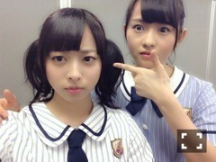

| 2014/07 27 Sun | 絞り切る。587回目 |
AiiAシアターで
アンダーライブ千秋楽を迎えました。
ユニットリクエスト
1位せっかちなかたつむり
2位孤独兄弟
11位やさしさとは
投票ありがとうございました！
初日 2位1位
2日目 2位11位
千秋楽 1位11位
なんとすべて
2回ずつ披露できたのです！
強運でした...
伊藤ちゃんずの孤独兄弟、
また披露できて嬉しかったあ
六本木公演含めてこの曲
こんなに歌えると思ってなかった。

気付いた方いると思いますが、
ロマンティックいか焼きが
ペアで踊る部分がありまして、
そのときはうざいくらい
ねねに寄り添ってました。
10公演
期間の長いライブということで、
メンバーのライブへの
気持ちの入り方が
半端じゃなかったです！
ひとつひとつ回を重ねるごとに
見えてくるものがたくさんあって、
次はどうしたらもっと良くなるか
悩んで考えて挑戦したら
ここまで変われるんだなあ。
私自身、本当に変わることが
できた期間です。
上手く言えないけど、
メンバー同士の本当の信頼関係を
築くことができました。
今回のライブから
研究生も全員参加し、
共にリハーサルをやってきて
一期生の意識が高まった。
みんなが意見言うようになりました。
そこがいちばん変わったところかな。
それはMCでも表れてました。
普段しゃべらないメンバーも
MCを担当できて良かった。
頼れるメンバーがいる分、
安心してパフォーマンスできて、
たぶん、今までで
いちばん楽しんだと思います...
全力出し切った。
アンコール後の最後に
全員で手をつないで
地声で挨拶した瞬間涙が溢れました。
ここまで頑張ってきて良かったなと。
楽天アンダーライブ以来の
Wアンコール。
もう終演のアナウンス入ってるのに
アンコールありがとうございました。
信頼できるメンバーと
ここまででできて
本当に良かったです。
本当にありがとう。
長い期間アンダーライブのために
朝から準備してくださった
スタッフのみなさん、先生、
本当にありがとうございました！
そして、来てくださったみなさん。
あんなに盛り上がれるのは、
みなさんがあたたかいからです。
あの距離でしか味わえない
熱気がありました。
お客さんの顔が近くで見れる距離を
今後も大事にしたい。
本当にありがとうございました！！

真夏の全国ツアーも
もうすぐ始まります。
今回のアンダーライブで得たものを
ツアーで出すことが課題です。
良いライブになるように頑張ります！
まりか
コメント(494)
2014/07/27 08:42